WooTours
WooCommerce Travel and Tour Booking
- Latest update: 04/01/2021
- By: ExThemes
- Email: exthemes.net@gmail.com
Thank you for purchasing my plugin. If you have any questions that are beyond the scope of this help file, please feel free to email via my user page contact form here. Thanks so much!
Introduction
WooTours is Wordpress a plugin that helps you create Tour, Travel, Appointment, Events and manage all your online Booking system easily with order system and any payment of WooCommerce. Allow visitors to register account and booking online.
Features list
- Bookings, allow users to booking Tour
- Use WooCommerce to create and sell tickets
- Multiple Payment mode
- Email to user when booking or booking sucsess or cancel
- User History booking
- Allow create booking for daily, weekly or special day
- Grid shortcode
- Table shortcode
- Carousel shortcode
- Custom ticket types
- Free ticket support
- 3 Single layout
- Review + coupon system
- Search widget
- Search shortcode
- Support category, tag
- PDF invoice
- Export CSV, PDF, Excel list of customer
- Visual Comporser Support
- Custom thumbsize
- Custom color for each tour
- Support Loco Translate plugin
- Supper easy configuration
- And more ...
If your theme has customise and style template of woocommerce, you will need to use your theme style which your has customised and to fix some confilct code by Go To WooTour > General > Main Purpose > Only use metadata :http://i.imgur.com/Pu6QLmj.jpg . ( with this option you can choose default layout for single product as Tour or WooCommerce in Single Tour Setting tab :http://i.imgur.com/4yPeLpW.jpg )
To create tour, you could check this:http://i.imgur.com/X01eQxc.jpg
Installation
The Full Package includes these following files and folders:
- Documentation folder - Contain this document
- Installation Files folder - Contain installable file plugin
- woo-tour.zip folder - WordPress Plugin Installation file
WooCommerce is required for the plugin to work properly
Install via Wordpress admin
- Login to WordPress Admin
- In the left menu panel go to Plugins > Add New > Upload to install plugin
- Click Upload
- Browse your download package to select installation files
- Click Install Now button
- Once it's uploaded, click the Activate link
Install via FTP Account
- Use your FTP software to browse to wp-content/plugins folder to install plugin
- Extract the installation files to their corresponding folders, for example woo-tour.zip to woo-tour and upload to server
- Once it's uploaded, go to your WordPress Admin, browse to Plugins > Installed Plugins
- Click the Activate link
Update
- Deactive "WooTour" plugin by going to Plugins > Deactive "WooTour" plugin
- Delete older version by clicking on Delete link. Confirm to delete.
- Update and re-install new version.
Install Sample Data
Creating Tour
1. Go To Wordpress Admin > Product > Add New Product
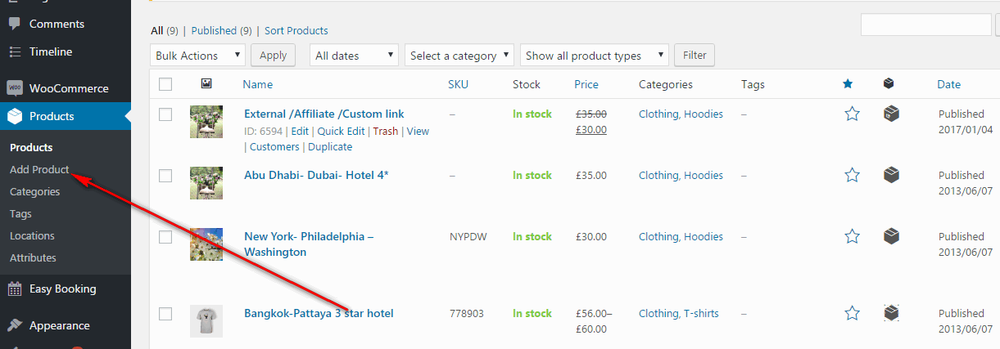2. Set a title, description, featured image and required field of the Tour

3. There are 4 different options for you can set date
- Select day: Select Departure of tour, when you select day for this option, other day will disable to select
Ex: Select Monday and Tuesday for Weekly with user can select Departure as Monday or Tuesday
- Disable date: Select date will disable(user cannot select this date)
- Special Date: Select list special date instead of calendar
- Expired Date: Select Expired date for this tour (user only can booking before this date)
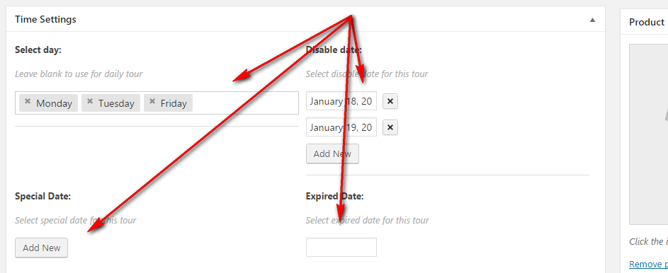4. Tour info
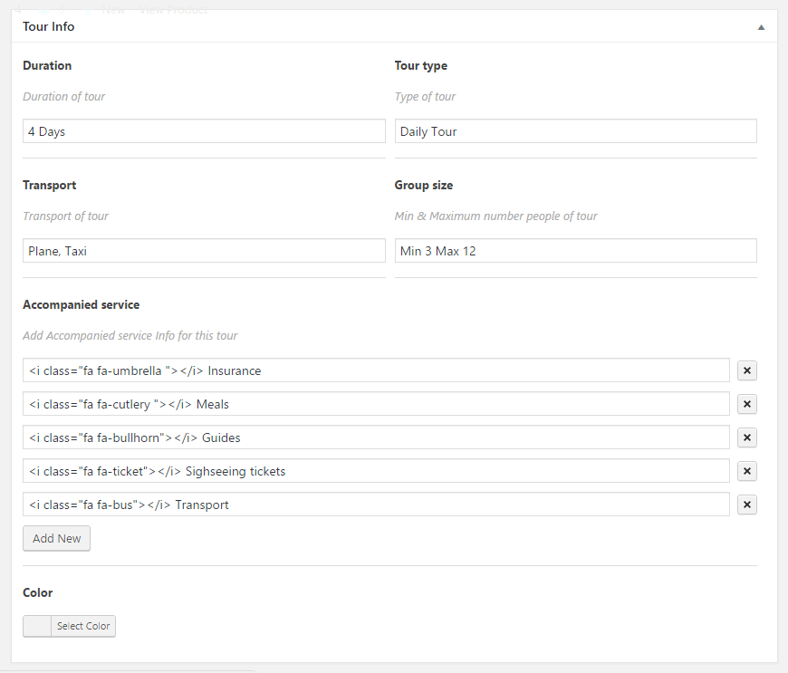5. Additional Information (set price for children and infant)
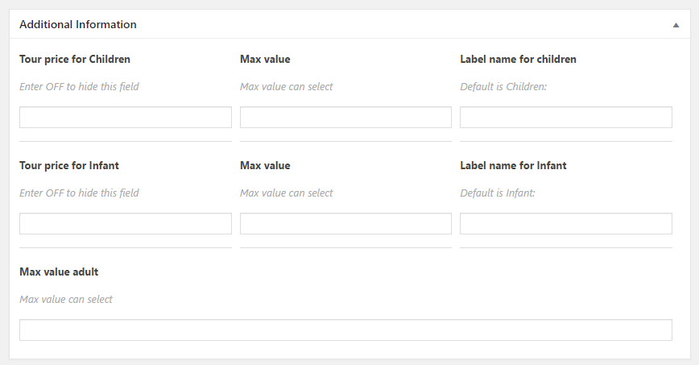6. Ticket setting
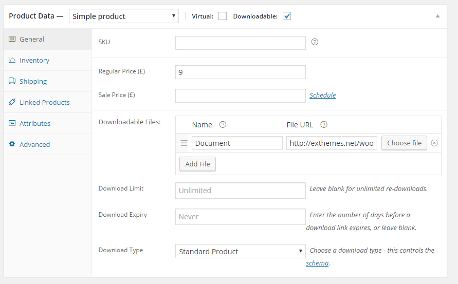To set tour multi ticket type, you could check this document
Price By Season
Go To Product > Edit/Add New Product > Price By Season
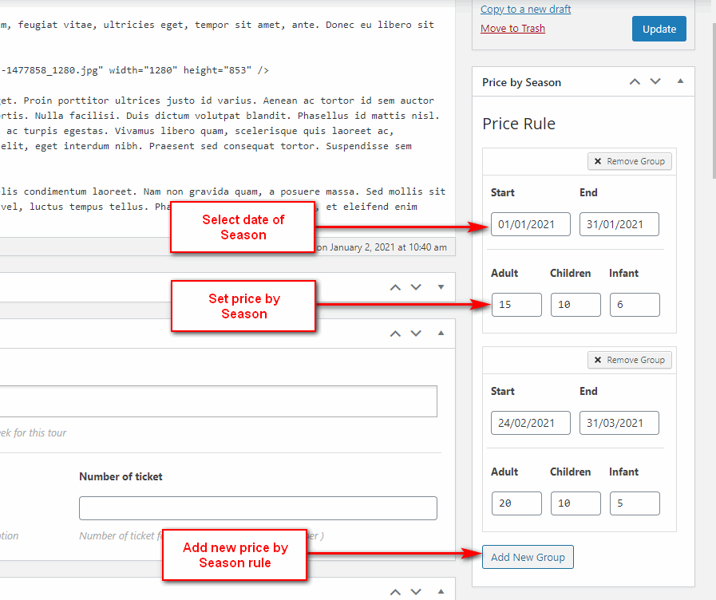Creating Discount
Go To Product > Edit/Add New Product > Discount
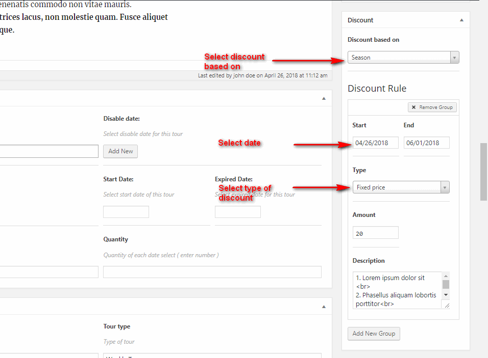
- Discount based on
- Number adult
- Season
- Start - Start date of discount (leave blank to unlimited time)( it is date book tour if Discount based on Number adult and it is Departure date if Discount based on Number Season)
- End - End date of discount
- Type - Choose type of discount
- Fixed price
- Percentage
- Number adult - Minimum Number adult to discount, enter number
- Amount - Enter number
Shortcode
WooTours - Table
WooTours - Table is a responsive shortcode for displaying tour on table easy.
[wt_table style="" ids="" count="" posts_per_page="" cat="" tag="" order="" orderby=""]
- style - Select between default, Classic (style="1") or Modern (style="2")
- ids - List of IDs to query, separated by a comma
- count - Total number of items to show. Default 6
- posts_per_page - Number of items per page
- cat - List of category ids (or slug), separated by a comma
- tag - List of tag ids (or slug), separated by a comma
- order - Order ascending (order="ASC") or descending (order="DESC") (select ASC or DESC)
- orderby - Choose order condition
- 'date' - Order by date.
- 'ID' - Order by post id. Note the captialization.
- 'author' - Order by author.
- 'title' - Order by title.
- 'name' - Order by post name (post slug).
- 'name' - Order by post name (post slug).
- 'modified' - Order by last modified date.
- 'parent' - Order by post/page parent id.
- 'rand' - Random order.
- 'menu_order' - Order by Page Order. Used most often for Pages (Order field in the Edit Page Attributes box) and for Attachments (the integer fields in the Insert / Upload Media Gallery dialog), but could be used for any post type with distinct 'menu_order' values (they all default to 0).
- 'meta_value' - Note that a 'meta_key=keyname' must also be present in the query. Note also that the sorting will be alphabetical which is fine for strings (i.e. words), but can be unexpected for numbers (e.g. 1, 3, 34, 4, 56, 6, etc, rather than 1, 3, 4, 6, 34, 56 as you might naturally expect). Use 'meta_value_num' instead for numeric values.
- 'meta_value_num' - Order by numeric meta value (available with Version 2.8). Also note that a 'meta_key=keyname' must also be present in the query. This value allows for numerical sorting as noted above in 'meta_value'.
- 'post__in' - Preserve post ID order given in the ids array
- 'unexpired' - Display the unexpired tour based on Expired Date. Arranged by chronological order of the unexpired tour
- 'has_expired' - Display the has expired tour based on Expired Date. Arranged by chronological order of the has expired Tour
- 'recent_view' - Display the Tour of user recent viewed
- 'sale' - Display the Tour sale
- 'featured' - Display the Tour featured
- 'none' - No order
Table Modern style
[wt_table style="2"]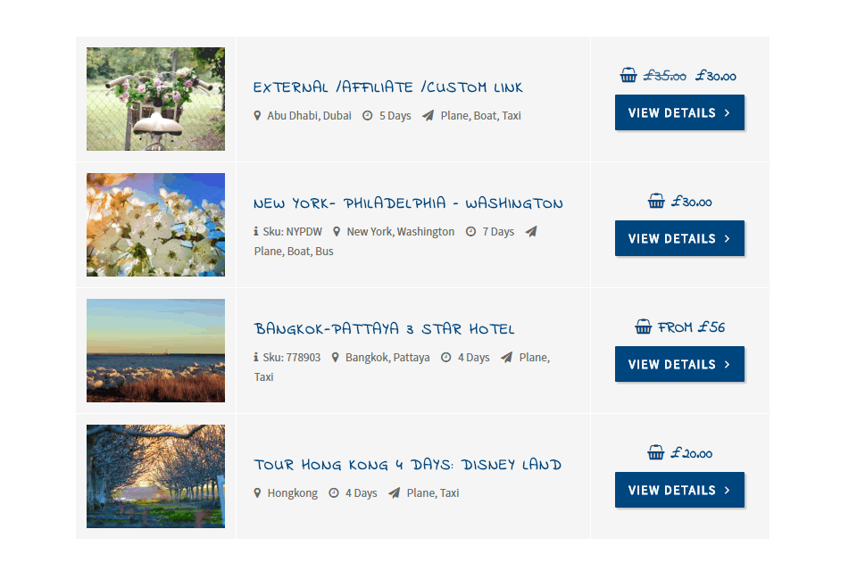
Table Classic style
[wt_table style="1"]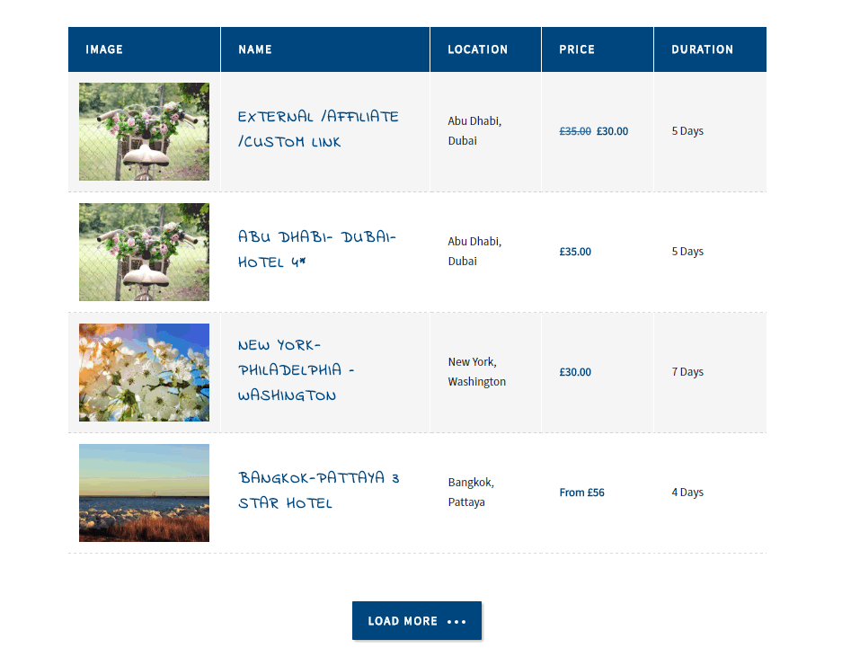
Tabel Default style
[wt_table]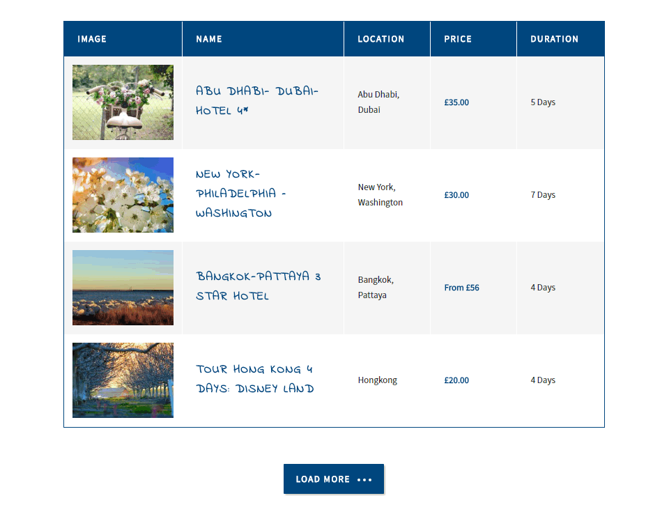
WooTours - Grid
WooTours - Grid is a responsive shortcode for displaying tour on grid easy.
[wt_grid columns="" ids="" count="" posts_per_page="" cat="" tag="" location="" order="" orderby=""]
- style - Select between Modern (style="") or Classic (style="classic")
- columns - Select from 1 to 5 (columns="1") or (columns="2") or (columns="3") or (columns="4") or (columns="5")
- ids - List of IDs to query, separated by a comma
- count - Total number of items to show. Default 6
- posts_per_page - Number of items per page
- cat - List of category ids (or slug), separated by a comma
- tag - List of tag ids (or slug), separated by a comma
- location - List of location ids (or slug), separated by a comma
- meta_key - Enter Custom field key
- order - Order ascending (order="ASC") or descending (order="DESC") (select ASC or DESC)
- orderby - Choose order condition
- 'date' - Order by date.
- 'ID' - Order by post id. Note the captialization.
- 'author' - Order by author.
- 'title' - Order by title.
- 'name' - Order by post name (post slug).
- 'name' - Order by post name (post slug).
- 'modified' - Order by last modified date.
- 'parent' - Order by post/page parent id.
- 'rand' - Random order.
- 'menu_order' - Order by Page Order. Used most often for Pages (Order field in the Edit Page Attributes box) and for Attachments (the integer fields in the Insert / Upload Media Gallery dialog), but could be used for any post type with distinct 'menu_order' values (they all default to 0).
- 'meta_value' - Note that a 'meta_key=keyname' must also be present in the query. Note also that the sorting will be alphabetical which is fine for strings (i.e. words), but can be unexpected for numbers (e.g. 1, 3, 34, 4, 56, 6, etc, rather than 1, 3, 4, 6, 34, 56 as you might naturally expect). Use 'meta_value_num' instead for numeric values.
- 'meta_value_num' - Order by numeric meta value (available with Version 2.8). Also note that a 'meta_key=keyname' must also be present in the query. This value allows for numerical sorting as noted above in 'meta_value'.
- 'post__in' - Preserve post ID order given in the ids array
- 'unexpired' - Display the unexpired tour based on Expired Date. Arranged by chronological order of the unexpired tour
- 'has_expired' - Display the has expired tour based on Expired Date. Arranged by chronological order of the has expired Tour
- 'recent_view' - Display the Tour of user recent viewed
- 'sale' - Display the Tour sale
- 'featured' - Display the Tour featured
- 'none' - No order
- 'has_signed_up' - Has signed up
- number_excerpt - Number of excerpt to show
Grid 1 column
[wt_grid]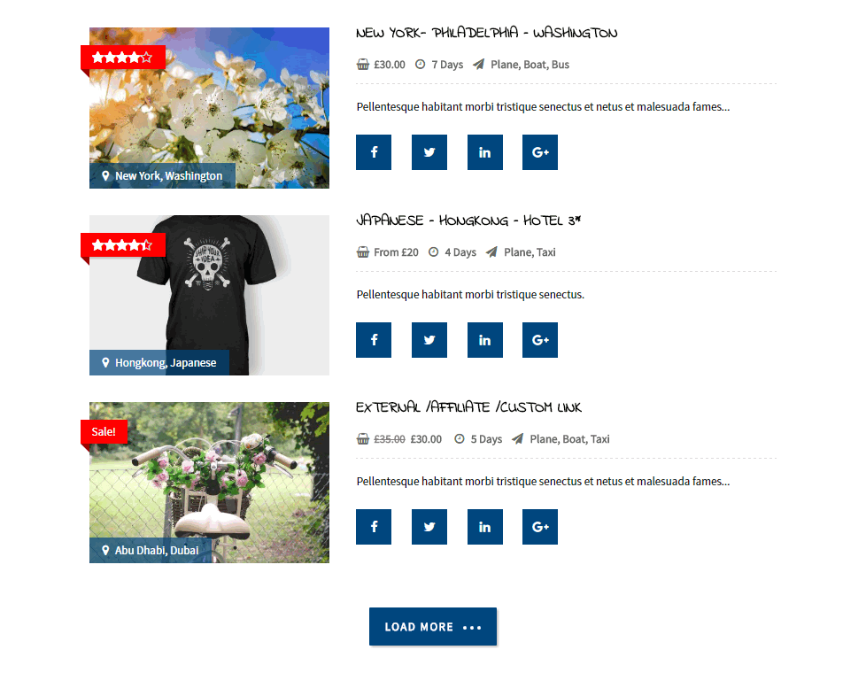
Grid 2 columns
[wt_grid columns="2"]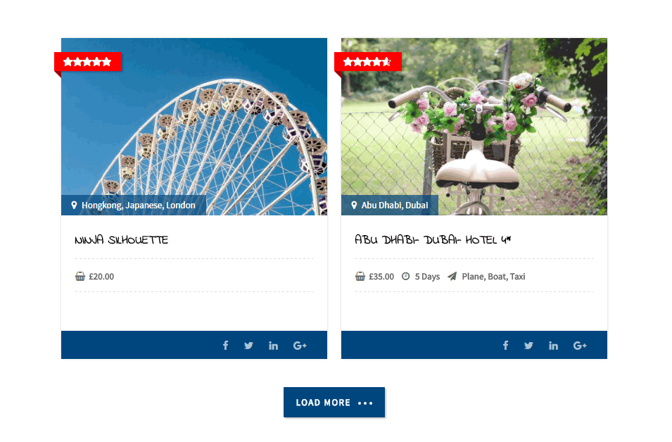
Grid 3 columns
[wt_grid columns="3"]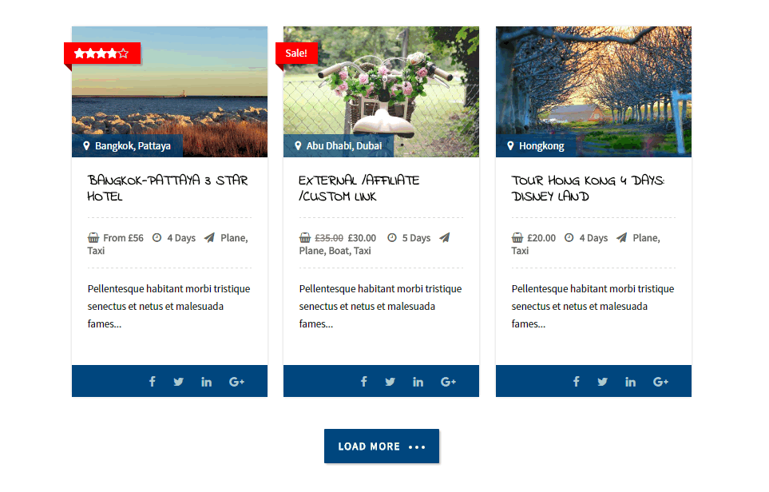
Grid 4 columns
[wt_grid columns="4"]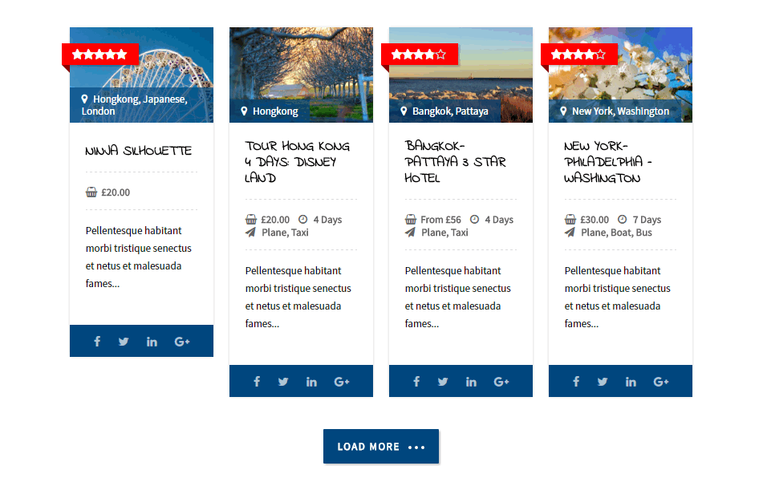
Wootours - Carousel
Wootours - Carousel. Display tour on carousel easy..
[wt_carousel ids="" count="" posts_per_page="" cat="" tag="" location="" order="" orderby="" autoplay=""]
- count - Total number of items. Default 6
- posts_per_page - Number items of each silder.
- ids - List of IDs to query, separated by a comma
- orderby - Choose order condition
- 'date' - Order by date.
- 'ID' - Order by post id. Note the captialization.
- 'author' - Order by author.
- 'title' - Order by title.
- 'name' - Order by post name (post slug).
- 'name' - Order by post name (post slug).
- 'modified' - Order by last modified date.
- 'parent' - Order by post/page parent id.
- 'rand' - Random order.
- 'menu_order' - Order by Page Order. Used most often for Pages (Order field in the Edit Page Attributes box) and for Attachments (the integer fields in the Insert / Upload Media Gallery dialog), but could be used for any post type with distinct 'menu_order' values (they all default to 0).
- 'meta_value' - Note that a 'meta_key=keyname' must also be present in the query. Note also that the sorting will be alphabetical which is fine for strings (i.e. words), but can be unexpected for numbers (e.g. 1, 3, 34, 4, 56, 6, etc, rather than 1, 3, 4, 6, 34, 56 as you might naturally expect). Use 'meta_value_num' instead for numeric values.
- 'meta_value_num' - Order by numeric meta value (available with Version 2.8). Also note that a 'meta_key=keyname' must also be present in the query. This value allows for numerical sorting as noted above in 'meta_value'.
- 'post__in' - Preserve post ID order given in the ids array
- 'unexpired' - Display the unexpired tour based on Expired Date. Arranged by chronological order of the unexpired tour
- 'has_expired' - Display the has expired tour based on Expired Date. Arranged by chronological order of the has expired Tour
- 'recent_view' - Display the Tour of user recent viewed
- 'sale' - Display the Tour sale
- 'featured' - Display the Tour featured
- 'none' - No order
- order - Order ascending (order="ASC") or descending (order="DESC") (select ASC or DESC)
- cat - List of category ids (or slug), separated by a comma
- tag - List of tag ids (or slug), separated by a comma
- location - List of location ids (or slug), separated by a comma
- meta_key - Enter Custom field key
- autoplay - Choose "On" (show_meta="on") to Auto next slider
WooTours - Search
WooTours - Search. Display Search form with filter and list of location
[wt_search location="" cats="" tags="" show_filters="" show_location="" search_ajax="" search_layout="" result_showin=""]
- search_ajax - Using search ajax feature (search_ajax="1")
- location - List of Location to query, separated by a comma
- cats - List of Cats ID (or slug), separated by a comma, Ex: 13,14
- tags - List of Tags ID (or slug), separated by a comma, Ex: 13,14
- show_filters - Choose "Yes" (show_filters="yes") to show filter, Choose "No" (show_filters="no") to hide filters
- show_location - Choose "Yes" (show_location="yes") to show list of location, Choose "No" (show_location="no") to hide list of location
- search_layout - Show search ajax result in table (search_layout="") or grid layout (search_layout="grid")
- result_showin - Enter class or id of element you want to show search result, default show in search shortcode element
Wootours - List
Wootours - List. Display tour on List easy..
[wt_list ids="" count="" posts_per_page="" cat="" tag="" location="" order="" orderby="" phone="" quotes_link="" meta_key=""]
- count - Total number of items. Default 6
- posts_per_page - Number items of each silder.
- ids - List of IDs to query, separated by a comma
- orderby - Choose order condition
- 'date' - Order by publish date.
- 'ID' - Order by post id. Note the captialization.
- 'author' - Order by author.
- 'title' - Order by title.
- 'name' - Order by post name (post slug).
- 'name' - Order by post name (post slug).
- 'modified' - Order by last modified date.
- 'parent' - Order by post/page parent id.
- 'rand' - Random order.
- 'menu_order' - Order by Page Order. Used most often for Pages (Order field in the Edit Page Attributes box) and for Attachments (the integer fields in the Insert / Upload Media Gallery dialog), but could be used for any post type with distinct 'menu_order' values (they all default to 0).
- 'meta_value' - Note that a 'meta_key=keyname' must also be present in the query. Note also that the sorting will be alphabetical which is fine for strings (i.e. words), but can be unexpected for numbers (e.g. 1, 3, 34, 4, 56, 6, etc, rather than 1, 3, 4, 6, 34, 56 as you might naturally expect). Use 'meta_value_num' instead for numeric values.
- 'meta_value_num' - Order by numeric meta value (available with Version 2.8). Also note that a 'meta_key=keyname' must also be present in the query. This value allows for numerical sorting as noted above in 'meta_value'.
- 'post__in' - Preserve post ID order given in the ids array
- 'unexpired' - Display the unexpired tour based on Expired Date. Arranged by chronological order of the unexpired tour
- 'has_expired' - Display the has expired tour based on Expired Date. Arranged by chronological order of the has expired Tour
- 'recent_view' - Display the Tour of user recent viewed
- 'sale' - Display the Tour sale
- 'featured' - Display the Tour featured
- 'none' - No order
- order - Order ascending (order="ASC") or descending (order="DESC") (select ASC or DESC)
- cat - List of category ids (or slug), separated by a comma
- tag - List of tag ids (or slug), separated by a comma
- location - List of location ids (or slug), separated by a comma
- meta_key - Enter Custom field key
- phone - Enter phone contact
- quotes_link - Enter get quotes link
WooTours - Taxonomy
WooTours - Taxonomy. Display Location, category tag in grid style
[wt_taxonomy style="" taxonomy="" term_ids="" count="" order="" orderby="" column=""]
- column - Select from 1 to 5 (column="1") or (column="2") or (column="3") or (column="4") or (column="5")
- style - Select style 1 or 2 (style="1") or (style="2")
- taxonomy - Enter name of taxonomy(product_cat,product_tag,wt_location), default: wt_location
- term_ids - List of term ID (category or tag or location ID), separated by a comma, Ex: 13,14
- count - Total number of items to show. Default show all
- order - Order ascending (order="ASC") or descending (order="DESC") (select ASC or DESC)
- orderby - Choose order condition
- 'name' - Order by Name.
- 'slug' - Order by Slug
- 'term_id' - Order by Term id.
- 'count' - Order by count.
Configuration
To go to WooTours Settings page, click on "WooTours" menu item.
General settings
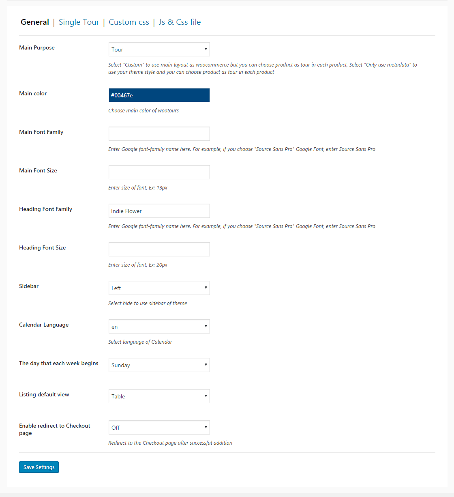Single Tour Settings
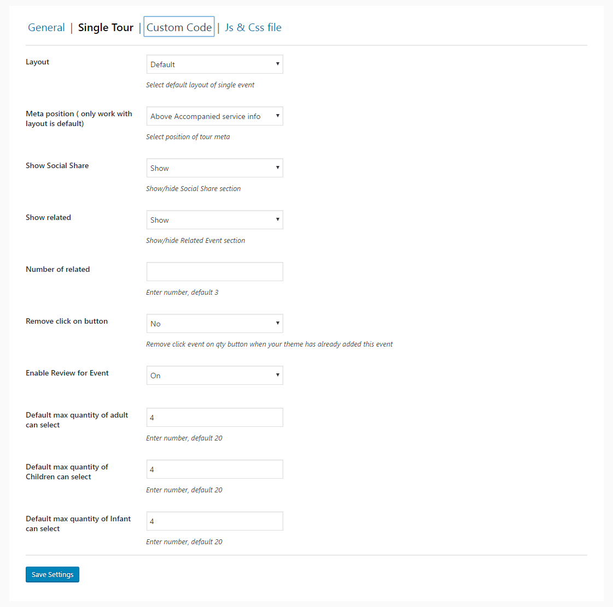Custom Code
Enter your Custom Code here
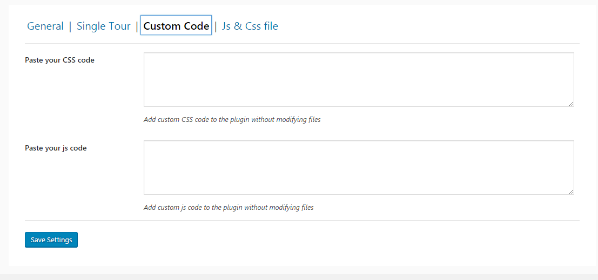PDF Invoice & Export CSV attendees
1. PDF Invoice
- You just install this addon to config PDF Invoice
- To config PDF Invoice you just go to WooCommerce > PDF Invoices
2. Export CSV attendees
- You could download and install this addon to config Export CSV attendees
- To config Export CSV attendees you just go to WooCommerce > Settings > Product > Product Customer List
- To Export CSV attendees you just go to bottom of the WooCommerce product edit page
Translation
The plugin is translation ready, please follow the video guide:
Portuguese (Brazil) language file available for download here Thanks micucci
Customize
To edit template of tour element you just copy folder "templates" in the folder "plugins/woo-tour/" to your theme folder and change name to "woo-tour" and you can customise it as you want
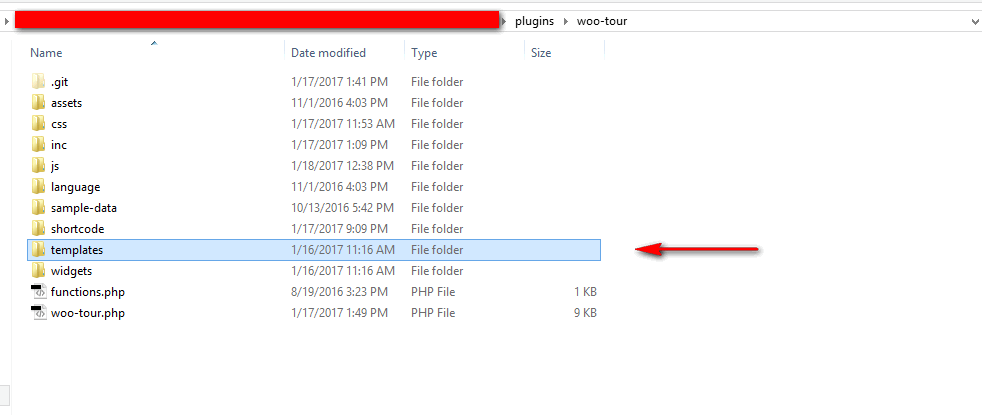To edit template of shortcode you just copy folder "content" in the folder "plugins/woo-tour/shortcode/" to theme folder themes/YOUR_THEME_FILE/woo-tour/ and change name to "content-shortcode" and you can customise it as you want
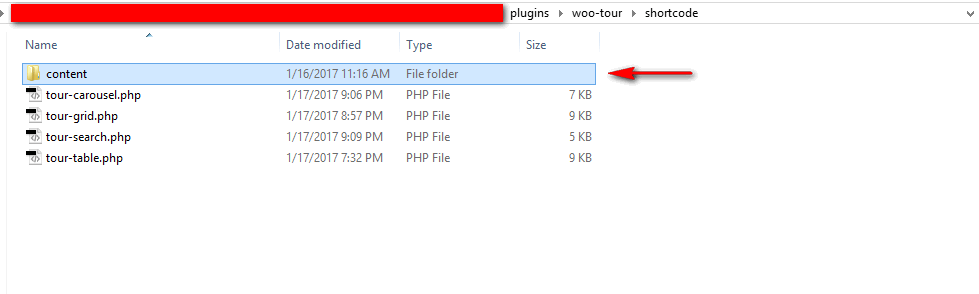Sources and Credits
I've used the following images, icons or other files as listed.
- Free Photos - by UNSPLASH
- The date picker - MIT License
- Custom Meta Boxes - GPL V2 License
- Bootstrap - MIT License
- OwlCarousel - MIT License
Once again, thank you so much for purchasing this plugin. As I said at the beginning, I'd be glad to help you if you have any questions relating to this plugin. No guarantees, but I'll do my best to assist. If you have a more general question relating to the plugin on Codecanyon, you might consider visiting the forums and asking your question in the "Item Discussion" section.
ExThemes